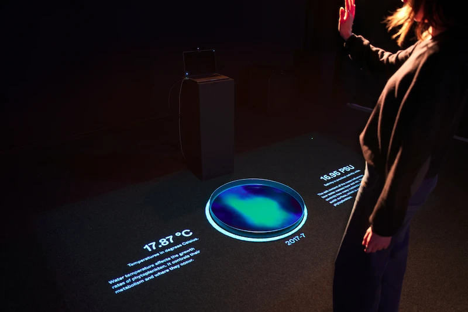
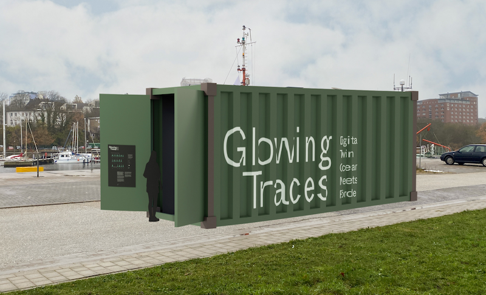

Video Material by Lennart Saken, Video Cut by Sophie Humbert
Challenge
In the medium term (2041–2060), approximately one billion people are at risk of being affected by coastal climate hazards across all climate scenarios. In the long term, a sea-level rise of approximately two meters is considered very likely if global warming reaches several degrees. Given this context, processes must be initiated across society as a whole and particularly among policymakers to adapt to higher sea levels and an increasing risk of storm surges.
Solution
Our project is dedicated to developing a tool that scientists can use to engage in dialogue with decision-makers, stakeholders, and affected communities. The goal is to combine research findings with new ideas from politics and society to develop long-term, transformative strategies for coastal protection. For this collaboration to succeed, a shared understanding of the initial situation and current research—as well as empathy for the various perspectives—must be established.
Output
Designed as a touchscreen table, the application brings people together and encourages dialogue. Through collaborative design and discussion, new perspectives are gained and more appropriate solutions are developed. At the same time, the application makes users aware of the long-term implications of their decisions and convey the urgency of taking action.


Photos by Lennart Saken
Users go through two phases: During the interactive phase of the application, participants can collaboratively develop solutions by applying measures to a digital map using drag-and-drop. Depending on the measure, the map changes and the impact becomes visible. In the application’s evaluation phase, visitors can review their results from the first phase. Coastal protection measures can lead to various future scenarios and have impacts on the region’s biodiversity, cultural heritage, economy, and residential infrastructure. Using VR headsets, users can view the region in the future as a 360-degree experience, including the changes brought about by coastal protection measures. The immersive nature of the experience and the personal connection leave a lasting impression.
The touchscreen app was developed using cables.gl. We created the icons and UI elements using Illustrator and Figma. The Venice scene was built in Blender based on a 3D model from Assassin’s Creed. The app for the VR headset was developed using Unity.
Recoast Sandbox was created together with Lennart Saken in the “Interactive Information Design” master’s program. It was developed in collaboration with Dr. Claudia Wolff and the Recoast Vision Team from CAU. Christian Engler (cables, Unity) and Jürgen Michelsen (welding) assisted us with the implementation. The project was supervised by Prof. Tom Duscher and Prof. Manfred Schulz.
Recoast Sandbox was displayed in the exhibition “Einblick / Ausblick 2026” at the Muthesius University of Fine Arts and Design.